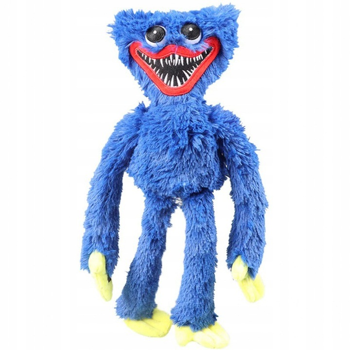
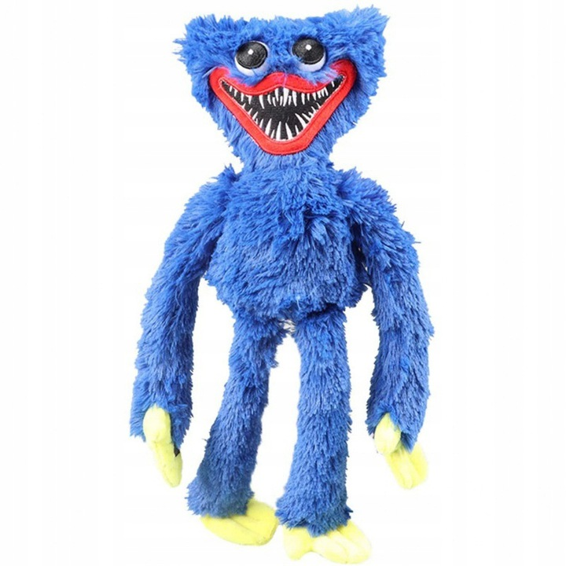

Simba Playtime
Simba Playtime
— главный герой:Симба,
выпущенной игры в 2022 году.
Симбу ДЕЛАЛИ: Джонатан Тейлор Томас (маленького)
и Мэттью Бродерик (взрослого); вокальные номера персонажа исполняли: Джейсон Уивер (маленький Симба) и Джозеф Уильямс (взрослый Симба). Помимо оригинальной Игры, образ Симбы появляется и во множестве других официальных и фанатских произведениях вселенной SimbaPlaytime
 

Simba Playtime
| Зовут Существо |
Huggy Wuggy |
| Пол |
Мужской |
| Тип |
Монстр |
| Что Делает По Ночам |
Убивает Тех Кто Приходит В Его Логово |